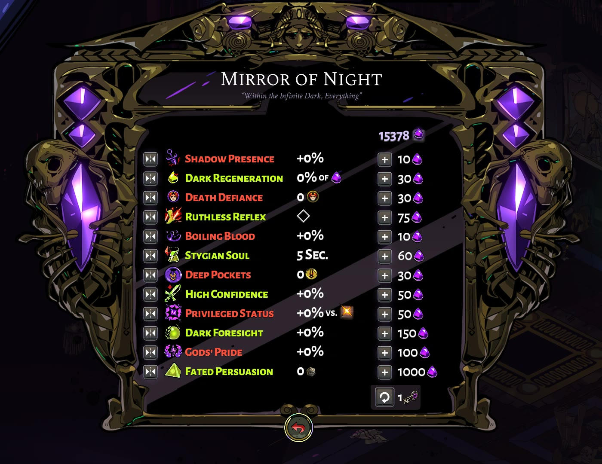

Trong bài này
Tầng 3 · Bài 04
Progression và phần thưởng
Lên cấp liên tục không có nghĩa là mạnh hơn, và nhận thưởng không có nghĩa là có ý nghĩa — bài này chỉ ra khi nào tiến trình và phần thưởng thật sự cộng hưởng với nhau.
Sau bài này bạn sẽ
- Phân biệt progression tuyến tính và phân nhánh
- Thiết kế lịch trình phần thưởng hợp lý
- Tránh phần thưởng vô nghĩa hoặc trùng lặp
Lên cấp mà vẫn thấy yếu
Bạn cày liên tục hai tiếng, cấp độ tăng đều, nhưng mở kho đồ ra vẫn thấy mình chẳng mạnh hơn hồi nãy. Hoặc vừa mở một rương, nhận một món đồ lấp lánh, rồi tự hỏi: cái này để làm gì?
Cả hai là lỗi phối hợp giữa tiến trình — con đường người chơi đi qua — và phần thưởng, thứ họ nhận được trên đường đó. Bài này đi vào cách hai thứ ăn khớp, hoặc lệch nhau.
Hai cấu trúc của tiến trình
Cờ vây chơi cả đời không chán, ván nào cũng khác; một game phiêu lưu tuyến tính thì chơi lại lần hai đã thuộc lòng đường đi. Jesper Juul gọi tên khác biệt này: hầu hết game kết hợp hai cách đưa thử thách cho người chơi — phát sinh, luật đơn giản kết hợp ra biến thể, và tiến trình, thử thách được đưa ra tuần tự.
Progression — một đường thử thách nối tiếp
Emergence — luật cố định, kết quả khác mỗi ván
Tiêu chí thực dụng để phân biệt hai loại, theo Juul: "As a rule of thumb, the simplest way to tell games of emergence from games of progression is to find guides for them on the net. Progression games have walkthroughs: lists of actions to perform to complete the game. Emergence games have strategy guides: rules of thumb, general tricks." (cách dễ nhất: tìm hướng dẫn trên mạng — game progression có walkthrough, danh sách hành động cần làm; game emergence có strategy guide, mẹo và nguyên tắc chung.) Hệ quả: game progression có thể hoàn thành trọn vẹn nên độ chơi lại rất thấp; game emergence thì luật không đổi nhưng ván nào cũng ra kết quả khác, nên chơi được mãi.
Không phải game nào cũng thuần một loại — Juul lấy ví dụ: "EverQuest is a game of emergence, with embedded progression structures." (EverQuest là game emergence — thế giới mở — có cấu trúc progression, tức hệ quest, lồng bên trong, như nhiều MMO hiện đại.)
Cách gọi trong bài này
Bài gọi "games of progression" là tiến trình tuyến tính, "games of emergence" là tiến trình mở/phân nhánh cho dễ hình dung — đây là diễn giải của bài, KHÔNG phải thuật ngữ Juul dùng. Juul không viết "linear" hay "branching" theo nghĩa này. Một bẫy cần tránh: theo Juul, branching narrative (cốt truyện rẽ nhánh) lại là ví dụ thuần nhất của progression — mọi thứ trong đó đều định trước hết, không phải "phân nhánh" kiểu cây kỹ năng. Hai chữ "phân nhánh" ở hai chỗ mang nghĩa khác nhau, đừng lẫn.

Tiến trình phân nhánh trong thực tế: cây kỹ năng
Cách phổ biến nhất để làm progression phân nhánh là cây kỹ năng. Blizzard giải thích lý do chọn hình cây cho talent của World of Warcraft: trực quan hoá các nhánh lựa chọn khi xây nhân vật, truyền đạt quan hệ phụ thuộc lẫn độ mạnh yếu mà không cần thêm luật. Mỗi talent có điều kiện tiên quyết vẽ bằng mũi tên — phải mua xong ít nhất một talent phía trước mới mở khoá được cái tiếp theo.
Đối lập là bậc thang thẳng: Baldur's Gate: Dark Alliance (PS2) quy XP thành cấp theo mẫu tam giác — Level 2 cần 1000 XP, Level 3 cần thêm 2000, Level 4 thêm 3000 (Ian Schreiber). Không nhánh nào để chọn, ai cũng đi đúng một đường, chỉ khác tốc độ.
| Cấu trúc | Đặc điểm |
|---|---|
| Cây kỹ năng (WoW talent) | Có nhánh để chọn; mỗi talent có điều kiện tiên quyết vẽ bằng mũi tên, phải mua xong nhánh trước mới mở khoá nhánh sau |
| Bậc thang thẳng (Baldur's Gate: Dark Alliance) | Không nhánh nào để chọn; XP tăng theo mẫu tam giác, ai cũng đi đúng một đường, chỉ khác tốc độ lên cấp |
- 1 Level 1 — điểm bắt đầu, 0 XP
- 2 Level 2 — cần 1000 XP
- 3 Level 3 — cần thêm 2000 XP (tổng 3000)
- 4 Level 4 — cần thêm 3000 XP (tổng 6000)
Gate: chặn để mở
Tiến trình luôn cần chỗ chặn tạm thời — cửa chặn. Adams & Dormans mô tả bằng ngôn ngữ economy: một ability đặc biệt, như double-jump, là nguồn sản xuất ra resource trừu tượng gọi là access — quyền đi tới khu vực trước đó chưa tới được. Cách khác không cần vật phẩm: Schreiber gọi là chặn theo độ khó — thả chuỗi thử thách tăng dần, kéo dài thời lượng chơi bằng cách kiểm soát tốc độ học thay vì khoá vật phẩm.
Gate bằng vật phẩm có rủi ro riêng, theo Adams & Dormans: Zelda hay dùng vật phẩm tiêu hao — mũi tên, bom — làm chìa khoá; hết giữa chừng là kẹt cứng. Zelda tránh việc này bằng nguồn tái sinh, ví dụ nồi đất tự hồi vật phẩm khi người chơi rời phòng rồi quay lại.
Gate bằng ability — access là một resource
Gate bằng vật phẩm tiêu hao — rủi ro deadlock
- Vật phẩm tiêu hao (mũi tên, bom) dùng làm chìa khoá cửa chặn.
- Người chơi dùng hết giữa chừng, không còn gì để mở cửa chặn tiếp theo.
- Deadlock — kẹt cứng, không thể tiến tiếp.
- Zelda tránh bằng nguồn tái sinh: nồi đất tự hồi vật phẩm khi người chơi rời phòng rồi quay lại.
Lịch trình phần thưởng
Ian Schreiber gọi nhịp thưởng trong game là lịch trình phần thưởng — không chỉ muốn người chơi tiến bộ, mà muốn họ cảm thấy đang được thưởng vì chơi giỏi. Có hai cực cần tránh. Thưởng quá thưa: "Giving too few rewards, or spacing them out for too long so that the player goes for long stretches without feeling any sense of progression, is usually a bad thing. The player is demoralized and may start to feel like if they aren’t making progress, they’re playing the game wrong (even if they’re really doing fine)." (thưởng quá thưa khiến người chơi nản, tưởng mình đang chơi sai dù thực ra vẫn ổn.) Thưởng quá dày cũng hại không kém — nhiều phần thưởng lớn dồn dập trong thời gian ngắn làm giảm giá trị cảm nhận của từng phần thưởng, dù cộng dồn lại vẫn ra đúng số đó.
Ngẫu nhiên hay cố định cũng tạo cảm giác khác nhau: "Another thing we know from psychology is that a random reward schedule is more powerful than a fixed schedule." (lịch trình thưởng ngẫu nhiên có sức tác động mạnh hơn cố định — Schreiber không dẫn nguồn tâm lý học cụ thể, chỉ nói chung "từ psychology".)
Celia Hodent chia lịch trình phần thưởng thành bốn kiểu, theo hai trục thời gian/hành động và cố định/biến thiên — bảng dưới liệt kê cả bốn kèm ví dụ. Thưởng theo hành động (ratio) tạo tần suất cao hơn thưởng theo thời gian, và variable ratio ổn định nhất trong cả bốn, theo Hodent — một nghiên cứu trên 210 người chơi thật xác nhận điều này: "On average, the variable-ratio schedule was better in the outcome measures than the fixed-ratio schedule." (lịch trình biến thiên cho kết quả tốt hơn lịch trình cố định — Nagle, Wolf, Riener, Novak, 2014.)
| Fixed cố định | Variable biến thiên | |
|---|---|---|
| Interval theo thời gian | Fixed interval Mốc thời gian biết trước — Fortnite thưởng mỗi ngày đăng nhập, Clash of Clans thưởng khi công trình xây xong đúng giờ | Variable interval Biết thưởng sẽ tới nhưng không biết lúc nào — cherry bonus trong Pacman |
| Ratio theo hành động | Fixed ratio Cần đủ một số hành động cố định — nhiệm vụ, mở khoá skill tree | Variable ratio Số hành động cần thiết ngẫu nhiên mỗi lần — slot machine, loot crate. Ổn định nhất trong bốn kiểu (Hodent) |
Chuyển màn hoặc khu vực mới cũng là một dạng thưởng — Schreiber khuyên giãn theo đường cong tăng dần, màn sau dài hơn màn trước một chút; và thưởng cho hành động chủ động có sức nặng hơn thưởng cho thứ người chơi không biết mình đang làm.
Khi phần thưởng trở nên vô nghĩa
Daniel Cook mô tả phần thưởng như một chuỗi dẫn tới một neo tâm lý — nhu cầu thật của người chơi: tiến bộ, quyền lực, thẩm mỹ, kết nối xã hội. Nếu một phần thưởng không nối tới neo nào: "If you don’t identify how each node serves your psychological anchors, you’ll very likely end up with disconnected nodes of isolated atomic meaning." (không xác định mỗi node phục vụ neo tâm lý nào, bạn sẽ có một đống phần thưởng rời rạc, mỗi cái tự mang một mẩu ý nghĩa cô lập.) Chuỗi bị đứt hoặc mập mờ cũng vậy — người chơi ngừng thấy giá trị ở những bước đầu, vì nó không còn dẫn rõ tới thứ họ thực sự muốn ở cuối chuỗi.
Lặp lại cũng làm phần thưởng mất giá. Raph Koster từng quan sát trẻ con chơi tic-tac-toe: trò chơi đột nhiên hết hấp dẫn ngay khi chúng đã học xong hết mọi nước đi. Phần thưởng cũng vậy — não học hết pattern thì thưởng lặp lại y hệt không còn dạy thêm gì mới, số liệu vẫn tăng nhưng cảm giác thì không.
Một dạng vô nghĩa khác: chỉ một lối chơi cho phần thưởng tốt nhất. Soren Johnson, từ Civilization: "Given the opportunity, players will optimize the fun out of a game." (hễ có cơ hội, người chơi sẽ tối ưu hoá đến mức loại bỏ cái vui ra khỏi game.) Người chơi lặp lại lối đó dù chán, vì phần thưởng ép họ vào một đường duy nhất — gộp lại (tổng hợp của bài, không phải quote của ai): phần thưởng có nghĩa khi mở lựa chọn mới hoặc đổi cách hành động, không chỉ là số to hơn.
Soi tiến trình và phần thưởng của một game
Đọc cấu trúc tiến trình và phần thưởng
- Game này đi theo progression, emergence, hay lồng cả hai như EverQuest?
- Cửa chặn hiện tại chặn bằng gì — vật phẩm, độ khó, hay cả hai? Có rủi ro kẹt cứng không?
- Lịch trình phần thưởng rơi vào ô nào trong bốn ô — người chơi có thấy nhịp đó hợp lý không?
- Phần thưởng gần nhất bạn nhận được nối tới neo tâm lý nào, hay chỉ là một con số rời rạc?
Sai lầm hay gặp
Gate mà không báo trước cho người chơi
Path of Exile từng khoá end-game sau khi hoàn thành 6 dungeon phụ ở Act 1–3, nhưng game không hề nói trước. Josh Bycer (blog cá nhân Game-Wisdom, cross-post gamedeveloper.com, 28/6/2016) gọi đây là gate tệ: người chơi không biết mình bị chặn, không biết phải làm gì để mở khoá.
Dồn hết thưởng vào đầu game
Rải thưởng lớn dày đặc vài giờ đầu rồi tắt hẳn khiến phần sau trống rỗng — người chơi quen nhịp thưởng dày, nay chỉ còn số liệu tăng chậm, không gì mới để mở khoá.
Thưởng trùng thứ người chơi đã có
Lên cấp mà chỉ nhận thêm currency đã đầy kho, hoặc unlock đúng thứ đã sở hữu — không mở lựa chọn mới nào, chỉ là một con số tăng lên trong lúc người chơi mong đợi thứ khác.
Soi 5 phần thưởng đầu tiên
Vẽ trục thời gian phần thưởng và kiểm tra ý nghĩa
- Chọn một game đang chơi.
- Liệt kê 5 phần thưởng đầu tiên bạn nhận được, đúng thứ tự thời gian.
- Xác định mỗi phần thưởng thuộc ô nào trong bốn ô: fixed/variable interval, fixed/variable ratio.
- Với mỗi cái, tự hỏi: nó nối tới neo tâm lý nào — tiến bộ, quyền lực, thẩm mỹ, kết nối xã hội — hay chỉ là một con số rời rạc?
- Đánh dấu phần thưởng không nối tới neo nào — đó là ứng viên cần thiết kế lại.
Xem gợi ý
Nếu khó xác định neo tâm lý, thử hỏi: phần thưởng này có đổi được cách bạn chơi ở màn tiếp theo không? Không đổi gì cả thì nhiều khả năng nó không nối tới neo nào.
Tự kiểm tra
Theo Jesper Juul, cách thực dụng nhất để phân biệt một game thuộc "progression" hay "emergence" là gì?
Juul chỉ ra progression sinh ra walkthrough — danh sách hành động cố định để hoàn thành game — còn emergence sinh ra strategy guide — mẹo và nguyên tắc chung, không có một đường duy nhất. Đáp án A không phải tiêu chí Juul đưa ra, thời lượng chơi không nói lên cấu trúc luật. Đáp án C cũng không liên quan, số nhân vật không quyết định game thuộc loại nào.
Trong khung bốn ô của Celia Hodent, phần thưởng kiểu slot machine — không biết bao giờ mới trúng, và số lần cần thử thay đổi mỗi lần — thuộc loại lịch trình nào?
Variable ratio là khi số hành động cần để nhận thưởng thay đổi ngẫu nhiên mỗi lần — đúng cơ chế slot machine. Fixed interval (A) là thưởng theo mốc thời gian cố định, không liên quan tới số lần thử. Fixed ratio (B) cũng cần số hành động cố định, khác hẳn "không biết bao giờ mới trúng" của variable ratio.
Trong các dungeon Zelda, cách nào giúp tránh kẹt cứng khi cửa chặn khoá bằng vật phẩm tiêu hao như mũi tên hay bom?
Adams & Dormans chỉ ra Zelda đặt sẵn các nguồn tái sinh — như nồi đất tự hồi vật phẩm khi người chơi rời rồi quay lại phòng — để không bao giờ hết sạch thứ cần cho cửa chặn. Đáp án A né tránh vấn đề thay vì giải quyết nó, cửa chặn vẫn cần thiết để kiểm soát tiến trình. Đáp án C không giải quyết nguyên nhân gốc là thiếu tài nguyên, chỉ giới hạn thêm cơ hội của người chơi.
Theo Daniel Cook, điều gì khiến một phần thưởng trở nên vô nghĩa với người chơi?
Cook mô tả phần thưởng như một chuỗi dẫn tới neo tâm lý — nhu cầu thật như tiến bộ, quyền lực, thẩm mỹ, kết nối xã hội. Một node không nối tới neo nào sẽ trở thành mảnh ý nghĩa cô lập, không cộng dồn thành gì cả. Đáp án A sai vì giá trị số liệu không phải tiêu chí của Cook — một phần thưởng nhỏ vẫn có nghĩa nếu nối đúng neo. Đáp án C nhầm sang vấn đề nhịp độ mà Schreiber bàn, không phải cơ chế "vô nghĩa" của Cook.
Ôn nhanh
Chốt lại bài
Nhớ 3 điều
- 1 Progression và emergence là hai cách khác nhau để đưa thử thách (Jesper Juul) — walkthrough vs strategy guide là cách dễ nhất để phân biệt; gate, dù bằng vật phẩm hay độ khó, đều cần tránh kẹt cứng bằng nguồn tái sinh.
- 2 Lịch trình phần thưởng có bốn kiểu — fixed/variable interval, fixed/variable ratio; không quá thưa (nản), không quá dày (giảm giá trị); variable ratio tạo tần suất hành động ổn định nhất (Ian Schreiber; Celia Hodent).
- 3 Phần thưởng chỉ có nghĩa khi nối tới một neo tâm lý thật hoặc mở ra lựa chọn mới — lặp lại không dạy gì mới, hay chỉ tối ưu một lối chơi duy nhất, đều làm nó mất giá trị (Daniel Cook; Raph Koster; Soren Johnson).
Đọc thêm
-
Paper
The Open and the Closed: Games of Emergence and Games of Progression
Nguồn gốc của toàn bộ khung emergence vs progression dùng xuyên bài.
-
Bài viết
World of Warcraft: Dragonflight Talent Preview
Studio tự giải thích lý do chọn hình cây và cơ chế prerequisite cho hệ thống talent.
-
Bài viết
Level 7: Advancement, Progression, and Pacing
Nguồn khái niệm reward schedule, skill gating, và pacing chuyển màn dùng xuyên bài.
-
Sách
Game Mechanics: Advanced Game Design — Chapter 4, Internal Economy
Định nghĩa gate bằng ngôn ngữ economy và ví dụ deadlock/renewable source trong Zelda.
-
Bài viết
Examining Gating in Game Design
Case Path of Exile gate không báo trước người chơi, dùng trong phần sai lầm hay gặp.
-
Bài viết
The Gamer's Brain, part 3: The UX of Engagement and Immersion (or Retention)
Khung bốn ô fixed/variable interval/ratio với ví dụ Fortnite, Clash of Clans, Pacman, slot machine.
-
Paper
The Use of Player-centered Positive Reinforcement to Schedule In-game Rewards Increases Enjoyment and Performance in a Serious Game
Bằng chứng định lượng: variable-ratio cho kết quả tốt hơn fixed-ratio trên 210 người chơi.
-
Bài viết
Value chains — A method for creating and balancing faucet-and-drain game economies
Nguồn khái niệm psychological anchor và lý do phần thưởng rời rạc mất ý nghĩa.
-
Bài viết
Game Developer Column 17: Water Finds a Crack
Nguồn câu "players will optimize the fun out of a game", dùng cho sai lầm thưởng ép một lối chơi.
-
Sách
A Theory of Fun for Game Design (trích chương 1)
Nguồn ví dụ tic-tac-toe minh hoạ vì sao phần thưởng lặp lại hết dạy được gì mới.